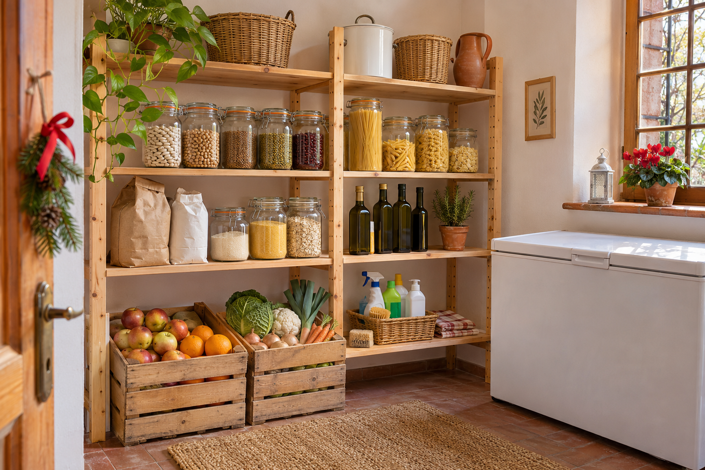

Grupos de consumo y asociaciones
Un regalo útil para vuestros socios al comenzar el año. Sin coste.
Ayudad a vuestros socios a empezar el año con más orden en casa y menos desperdicio. Hemos preparado un mensaje y carteles para compartir.
Elegir los materiales gratuitosDescubrir EatMeFirst
EatMeFirst es una aplicación en línea para organizar las reservas de alimentos y los productos del hogar, controlar las fechas de caducidad, registrar el consumo y preparar la lista de la compra.
Estamos preparando el lanzamiento internacional de EatMeFirst y queremos darla a conocer al mayor número posible de personas. Nos dirigimos a grupos y asociaciones que se interesan por el ahorro y la reducción del desperdicio. Vuestra recomendación puede ayudarnos a llegar a personas interesadas y recoger sugerencias para mejorar la aplicación.
Estas y otras funciones útiles son gratuitas, sin límite de tiempo. Se utiliza en línea desde el móvil, sin registro y sin instalar programas.
Los cambios del inventario se guardan automáticamente y al instante en el móvil utilizado, gratis.
Los datos de vuestros productos y consumos no se envían a nuestros servidores.
Un pequeño juego didáctico permite conocer las funciones con productos de ejemplo.
No pedimos compras, remuneración, datos de vuestros socios ni publicidad a cambio. Podéis compartir el anuncio en vuestra web, tablón o boletín, o colocar un cartel en el punto de recogida. Si lo imprimís, solo hacen falta el papel y la impresión.
Elegid color o blanco y negro, con o sin espacio para el nombre, logotipo o sello del grupo. Personalizar el cartel es opcional.
Elegir los materiales gratuitosEmpieza desde tu móvil
EatMeFirst se lee bien en la pantalla del móvil. Con la cámara puedes escanear códigos de barras mientras guardas la compra. También funciona en un PC, donde puedes introducir los productos manualmente, incluso sin código de barras.
El enlace para los socios lleva a la web de EatMeFirst. Allí pueden conocer a Max, Eva y Leo, descubrir las funciones, probar el juego y después abrir la aplicación.